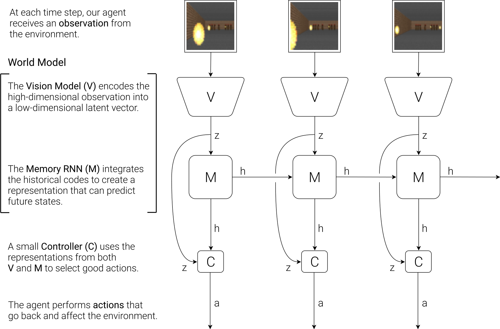
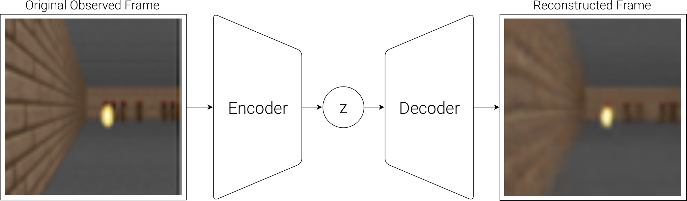
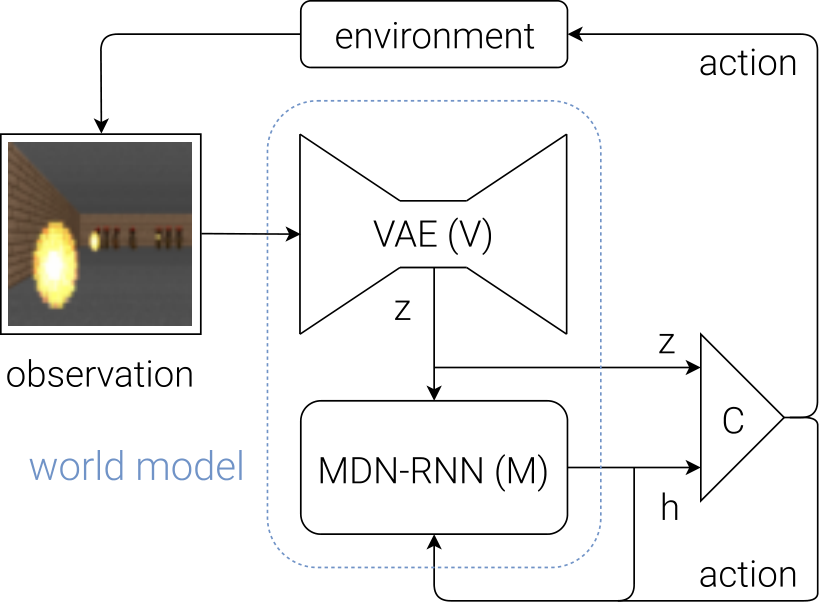
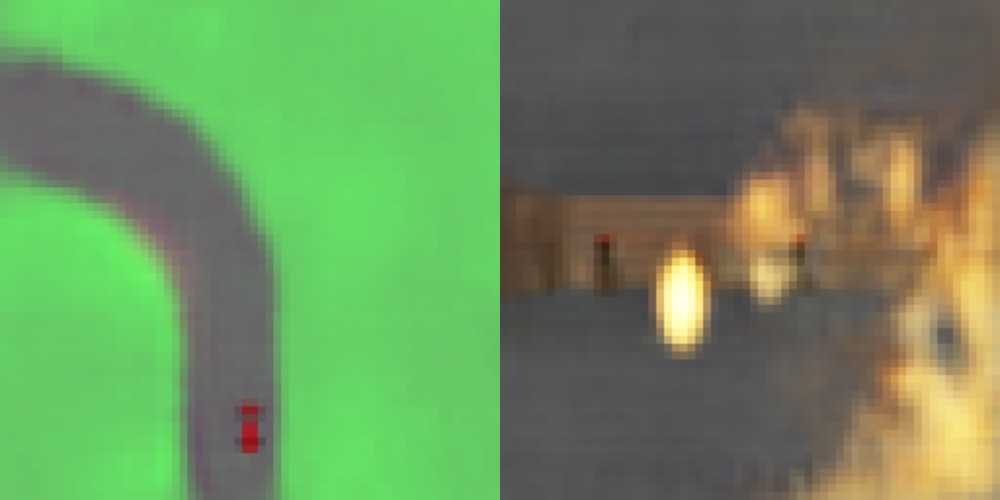

World Models
原论文摘要 · English Abstract
We explore building generative neural network models of popular reinforcement learning environments. Our world model can be trained quickly in an unsupervised manner to learn a compressed spatial and temporal representation of the environment. By using features extracted from the world model as inputs to an agent, we can train a very compact and simple policy that can solve the required task. We can even train our agent entirely inside of its own hallucinated dream generated by its world model, and transfer this policy back into the actual environment.
V 编码观测
视觉模型把图像压缩为潜向量 z
M 预测未来
MDN-RNN 预测下一潜向量的分布
C 输出动作
线性控制器由潜向量与记忆状态输出动作
环境执行
环境执行动作并返回新观测与奖励
M 更新记忆
用新经验更新隐状态，循环往复
问题与动机
强化学习长期面临一个两难：模型无关（model-free）的方法直接从试错中学习策略，往往需要海量真实环境交互，而且学到的策略通常是参数不多的小网络；想要用大网络直接学策略，又会被信用分配问题拖垮——奖励信号稀疏而延迟，很难把一次成功或失败精确归因到成千上万个参数上。
与此同时，人类并不是这样学习的：我们的大脑会先形成一个关于世界的内部模型——压缩过的空间与时间表征，并用它来预测“如果我这样做，接下来会看到什么”。论文开篇引用 Forrester 对心智模型的描述和棒球击球手的例子：击球手只有几毫秒做决定，比视觉信号传到大脑的时间还短，之所以能击中时速 100 英里的快球，是因为大脑在凭内部模型做本能预测，而不是现场展开长远规划。
论文要回答的问题因此是：能不能让智能体也先学会一个世界的生成式模型，再让一个极小的决策器站在这个模型的肩膀上行动？如果可以，真实环境的交互成本、策略的复杂度与可训练性都会被重新分配——大模型负责理解世界，小模型负责做决定。
- 模型无关 RL 需要大量真实交互，且难以训练大网络策略。
- 人类凭内部模型做快速、本能的预测与决策，而非每步都做长远规划。
- 核心问题：能否把“理解世界”与“做决定”分开，让大模型学前者、小模型学后者。
核心思想
论文的核心思想可以概括为一句话：把智能体拆成一个大的世界模型和一个小的控制器，先无监督地训练世界模型学会压缩与预测，再用世界模型提供的特征训练控制器。世界模型本身不知道奖励是什么，它的任务只是忠实地压缩并预测观测序列；只有控制器接触奖励信号，负责把“现在看到了什么、未来可能发生什么”映射为动作。
这个拆分带来两个关键好处。第一，世界模型可以用反向传播高效训练，因为它有明确的监督信号——重建当前帧、预测下一帧的潜向量，这比稀疏的奖励信号丰富得多；第二，控制器因为极小（CarRacing 中只有 867 个参数），信用分配问题被大幅简化，甚至可以用不需要梯度的进化策略（CMA-ES）来优化。
更激进的一步是“梦境训练”：既然世界模型能生成未来的观测分布，智能体就可以完全在自己幻觉出的虚拟环境里训练策略，再把策略迁移回真实环境。论文的 VizDoom 实验正是要证明这一点——智能体从未在真实 VizDoom 里训练过策略，却能在其中存活下来。
- 拆分：大世界模型（理解）+ 小控制器（决策），各用最适合自己的方式训练。
- 世界模型无监督训练，不接触奖励；控制器是唯一接触奖励的部分。
- 世界模型可作为可替代真实环境的虚拟环境，支持梦境训练与迁移。

模型结构与关键机制
智能体由三个部分组成，记为 V、M、C。视觉模型 V 是一个卷积变分自编码器（ConvVAE）：输入是缩放到 64×64×3 的 RGB 图像，经过 4 层步长为 2 的卷积编码为均值 $\mu$ 与标准差 $\sigma$，再从高斯分布 $\mathcal{N}(\mu, \sigma I)$ 中采样出潜向量 $z$；解码器用 4 层反卷积把 $z$ 还原为图像。CarRacing 的潜向量维度 $N_z = 32$，VizDoom 为 64。VAE 的高斯先验既限制了压缩的信息容量，也让模型对 M 生成的不真实 $z$ 更鲁棒。
记忆模型 M 是一个 MDN-RNN：以 LSTM 为主干，输出层是混合密度网络（Mixture Density Network）。它建模的条件分布是 $p(z_{t+1} \mid a_t, z_t, h_t)$，即在当前动作 $a_t$、当前潜向量 $z_t$ 与 RNN 隐状态 $h_t$ 的条件下，下一潜向量的概率分布。这个分布被近似为 5 个高斯的混合，每个分量是因子化（对角协方差）的高斯，不建模 $z$ 各维度之间的相关系数 $\rho$。之所以输出分布而不是确定性预测，是因为环境本身是随机的，且混合分布能表示离散的随机事件——例如怪物“开火还是不动”这种多模态的未来。采样时有一个温度参数 $\tau$：把混合分布的标准差按 $\tau$ 缩放，$\tau$ 越小采样越集中、环境越接近确定性，$\tau$ 越大未来越随机、梦境越难。
控制器 C 被刻意做成最简单的形式：单层线性模型 $a_t = W_c [z_t; h_t] + b_c$，即把当前潜向量 $z_t$ 与 RNN 隐状态 $h_t$ 拼接后做一次线性映射，再经 tanh 截断到合法动作范围。它的全部参数就是权重矩阵 $W_c$ 与偏置 $b_c$。论文强调，$h_t$ 本身已经包含了“未来可能如何分布”的信息，所以控制器不需要自己做前瞻规划，只要“本能地”查询 $h_t$ 就能做出快速反应——这正是棒球击球手类比在模型层面的落地。
- V：ConvVAE，64×64×3 输入，4 层卷积编码、4 层反卷积解码，$N_z = 32$（赛车）/ 64（Doom）。
- M：LSTM + MDN，建模 $p(z_{t+1} \mid a_t, z_t, h_t)$，5 个对角高斯混合，温度 $\tau$ 调节随机性。
- C：线性模型 $a_t = W_c [z_t; h_t] + b_c$，参数极少，动作经 tanh 截断。
- 输入 C 的是“现在”（$z_t$）与“对未来的预期”（$h_t$）的拼接。


训练与推理流程
训练分三步走，且 V 与 M 是分开训练的。第一步，用随机策略在真实环境中收集 10,000 条随机 rollout，记录每步的观测与动作；第二步，用这些帧训练 VAE，损失为重建的 $L_2$ 距离加 KL 散度，训练 1 个 epoch，单块 GPU 上不到一小时；第三步，把每帧编码为 $z$，再用 $(z_t, a_t)$ 序列以教师强制（teacher forcing）方式训练 MDN-RNN 20 个 epoch，目标是最大化下一潜向量的对数似然。为了防止 MDN-RNN 过拟合到某一次采样的 $z$，训练时每次构造 batch 都重新从 $\mathcal{N}(\mu, \sigma)$ 中采样 $z$。CarRacing 的 LSTM 有 256 个隐单元，VizDoom 为 512 个。
推理时（真实环境中的一次 rollout）流程是：V 把当前观测编码为 $z_t$；C 根据 $[z_t; h_t]$ 输出动作 $a_t$；环境执行 $a_t$ 返回新观测与奖励；M 以 $(a_t, z_t, h_t)$ 为输入更新隐状态得到 $h_{t+1}$，供下一步使用。注意 M 在推理时也持续运转，它不断用自己的预测更新记忆，因此 $h_t$ 始终是“到目前为止的历史与对未来的预期”的压缩。
控制器的训练与 V、M 完全解耦：固定已训练好的 V 与 M，用 CMA-ES 进化 C 的参数。每一代有 64 个候选控制器，每个候选在 16 次不同随机种子的 rollout 上评估，适应度取 16 次累计奖励的平均值。CarRacing 的训练持续了 1800 代。在梦境训练（VizDoom）中，流程相同，但 rollout 发生在虚拟环境里：M 采样出 $z_{t+1}$ 并预测终止信号 $\mathrm{done}_{t+1}$（概率超过 50% 即判为死亡），V 的编码器不再需要，因为整个虚拟环境直接在潜空间中运行，甚至不需要渲染图像、也不需要运行真实游戏引擎。
- 三步：10,000 条随机 rollout 收集数据 → 单独训 VAE → 单独训 MDN-RNN（教师强制，20 epoch）。
- 推理：V 编码 → C 决策 → 环境执行 → M 更新隐状态，循环往复。
- C 用 CMA-ES 进化：种群 64，每候选评估 16 次 rollout，适应度为平均累计奖励。
- 梦境中无需 V 编码真实帧：M 直接在潜空间采样 $z_{t+1}$ 与 $\mathrm{done}$ 信号。
实验与结果
CarRacing-v0 的任务是驾驶小车跑完随机生成的赛道，动作为转向、加速、刹车三个连续量，奖励来自于按时经过尽可能多的赛道方块；按环境定义，100 次连续试验平均分达到 900 才算“解决”，这要求失误极少。只用 V 的特征（控制器只能看到 $z_t$）时，智能体平均 632 ± 251 分，开起来摇摆不定、过弯时常冲出赛道；给控制器加一个 40 个 tanh 单元的隐藏层后提升到 788 ± 141 分，仍未解决。
一旦控制器同时看到 $z_t$ 与 $h_t$，成绩跃升为 906 ± 21 分（100 次随机试验），超过了 900 的解决线，也超过了当时 Gym 排行榜的最佳成绩 838 ± 11 分，以及 DQN 的 343 ± 18 分和 A3C 的 591–652 分。论文指出，这说明仅靠“当前画面”的表征是不够的，$h_t$ 中关于未来的预测性信息才是稳定过弯、做出快速反射式决策的关键。而且世界模型直接以原始 RGB 像素流为输入，无需人工边缘检测或堆叠多帧。参数量上，VAE 有 4,348,547 个参数，MDN-RNN 有 422,368 个，而控制器只有 867 个——复杂性几乎全在世界模型里。
VizDoom 的 Take Cover 任务要求智能体躲避对面怪物射来的火球，奖励定义为存活的时间步数，单局上限 2100 步（约 60 秒），100 次连续试验平均存活超过 750 步（约 20 秒）算解决。这里的世界模型除了预测 $z_{t+1}$，还要预测死亡事件 $\mathrm{done}_{t+1}$，即建模 $p(z_{t+1}, d_{t+1} \mid a_t, z_t, h_t)$。智能体先在温度 $\tau = 1.15$ 的梦境 DoomRNN 中训练，在虚拟环境中约得 900 步；把该策略直接部署到真实 VizDoom 后，100 次试验平均存活约 1100 步（最佳温度下 1092 ± 556 步），远超 750 的解决线与 Gym 排行榜的 820 ± 58 分，也高于随机策略的 210 ± 108 步。值得注意的是，梦境里的怪物数量等细节并不准确，但在一个更难、更随机的梦境里练出来的策略，回到更干净的真实环境反而表现更好。
- CarRacing：仅 V 为 632 ± 251 分；V 加隐藏层 788 ± 141 分；完整世界模型 906 ± 21 分，达到 900 的解决线。
- VizDoom Take Cover：梦境中训练，真实环境约 1100 步，远超 750 步的解决线与排行榜 820 ± 58 步。
- 参数分布极不均衡：VAE 约 434 万、MDN-RNN 约 42 万（赛车）/ 168 万（Doom），控制器仅 867 / 1088 个。
实验结果 · 数据
CarRacing-v0：完整世界模型 vs 仅视觉特征（100 次试验平均分）
| 配置 | 平均分 | 说明 |
|---|---|---|
| 仅 V（控制器只看到 $z_t$） | 632 ± 251 | 过弯时常冲出赛道 |
| V 加 40 个 tanh 单元隐藏层 | 788 ± 141 | 仍未达到解决线 |
| 完整世界模型（$z_t$ + $h_t$） | 906 ± 21 | 超过 900 的解决线 |
| 解决线（环境定义） | 900 | 100 次连续试验平均分 |
| 当时 Gym 排行榜最佳 | 838 ± 11 | — |
| DQN | 343 ± 18 | — |
| A3C | 591–652 | — |
VizDoom Take Cover：梦境中训练、真实环境中测试（存活步数，单局上限 2100 步）
| 配置 | 存活步数 | 说明 |
|---|---|---|
| 梦境 DoomRNN 中训练（$\tau = 1.15$） | 约 900 | 虚拟环境中的成绩 |
| 迁移到真实 VizDoom | 约 1100（最佳温度下 1092 ± 556） | 100 次试验平均 |
| 解决线（环境定义） | 超过 750 | 约 20 秒 |
| Gym 排行榜 | 820 ± 58 | — |
| 随机策略 | 210 ± 108 | — |
温度 $\tau$ 对梦境训练与迁移的影响（VizDoom，存活步数）
| 温度 $\tau$ | 虚拟环境 | 真实环境 | 说明 |
|---|---|---|---|
| 0.10 | 2086 ± 140 | 193 ± 58 | 虚拟近满分，真实比随机策略还差 |
| 0.50 | 2060 ± 277 | 196 ± 50 | — |
| 1.00 | 1145 ± 690 | 868 ± 511 | — |
| 1.15 | 918 ± 546 | 1092 ± 556 | 真实环境最佳 |
| 1.30 | 732 ± 269 | 753 ± 139 | 得分下降但方差更小、策略更稳健 |
参数量分布：复杂性几乎全在世界模型里
| 部分 | 参数量 |
|---|---|
| VAE（视觉模型 V） | 4,348,547 |
| MDN-RNN（记忆模型 M，赛车） | 422,368 |
| MDN-RNN（Doom） | 约 168 万 |
| 控制器 C（赛车） | 867 |
| 控制器 C（Doom） | 1088 |

局限与争议
这篇论文最诚实、也最有启发性的部分，是它对“作弊”的讨论。世界模型只是真实环境的近似，它偶尔会生成不符合真实物理的轨迹；而控制器在梦境里拥有 M 的全部隐状态，相当于直接接触了游戏引擎的内部状态，因此它会系统性地寻找模型的漏洞。论文记录了一个典型例子：在低温度下训练的智能体学会了一种“超能力”——通过特定的移动方式让怪物永远不发射火球，甚至让已经出现的火球凭空熄灭。
温度 $\tau$ 的实验把这个问题量化得很清楚：$\tau = 0.10$ 时虚拟环境得分高达 2086 ± 140 步（几乎满分 2100），但迁移到真实环境只有 193 ± 58 步，比随机策略还差；$\tau = 0.50$ 时同样是虚拟 2060 ± 277、真实 196 ± 50；$\tau = 1.00$ 时虚拟 1145 ± 690、真实 868 ± 511；$\tau = 1.15$ 时虚拟 918 ± 546、真实 1092 ± 556，为最佳；$\tau = 1.30$ 时虚拟 732 ± 269、真实 753 ± 139，得分下降但方差也更小、策略更稳健。结论是：温度太低，模型近乎确定性，控制器会利用模式坍缩（怪物不攻击）刷出虚假高分；温度太高，梦境太难又学不到东西。$\tau$ 本质上是在“真实感”与“可利用性”之间做权衡，是一个需要调的超参数，而非一劳永逸的解法。
更深层的局限在于数据与结构。两个实验的世界模型都只用随机策略收集的 10,000 条 rollout 训练了一轮——对简单任务够用，但对复杂任务，智能体只有学会之后才能到达世界的某些区域，这就要求“探索—收集—重训模型—再训练策略”的迭代循环，论文只在第 5 节勾勒了这一循环，未真正实现。此外，VAE 的逐帧压缩会丢失细节（如怪物数量），MDN-RNN 的 5 个对角高斯混合对复杂动力学的表达能力也有限；而且整个框架没有显式建模奖励，控制器只能靠进化策略从奖励中学习，样本效率与可扩展性都受限。
- 策略会“作弊”：利用模型近似误差找到真实环境中不存在的捷径，如让火球熄灭。
- 温度 $\tau$ 是关键权衡：$\tau = 0.10$ 时虚拟近满分、真实仅 193 步；$\tau = 1.15$ 时真实最佳 1092 步。
- 只用随机策略数据训练一轮世界模型，复杂任务需要论文未实现的迭代式探索—重训循环。
- VAE 丢失细节、MDN 表达能力有限，且世界模型不建模奖励，限制了扩展性。
为什么今天还重要
今天重读这篇论文，它的价值不在于某一个具体的网络结构，而在于它确立的范式与提出的问题。V—M—C 的三分法、潜空间中的动力学建模、“在模型里训练策略再迁移”这条主线，直接通向 PlaNet（用潜动力学做规划）、Dreamer（在潜空间中用梯度学习策略并建模奖励）、MuZero（连观测都不重建，只学对决策有用的潜动力学），乃至今天以视频生成为世界模型的 GAIA、Genie 等工作。论文中关于“模型会被策略利用”的讨论，也预示了后来整个模型-based RL 领域对模型误差、分布偏移与不确定性建模的持续关注。
其次，论文的写作方式本身就有方法论意义：它不是一篇堆砌技巧的论文，而是一篇“把 1990–2015 年的一系列思想蒸馏成一个可复现的最小系统”的论文。它用 CarRacing 与 VizDoom 两个直观的实验、交互式在线版本与清晰的消融（仅 V vs. 完整世界模型），让读者能亲手感受到“预测未来的表征”到底带来了什么。这种“先讲清一个简单而完整的系统，再指出它的边界”的写法，正是后续许多世界模型工作默认的论述模板。
最后，它的局限恰恰标出了后来者的路线图：如何让世界模型自己驱动探索（好奇心、信息增益）、如何让模型与策略迭代地共同进化、如何用更强的生成模型（扩散模型、Transformer）替代 VAE+MDN-RNN、以及如何在真实机器人与自动驾驶等高风险场景中保证模型不被利用。读懂这篇论文，就等于拿到了理解整个 interactive world model 谱系的一把钥匙。
- 确立了“学世界模型 → 在模型里学策略 → 迁移”的范式，后续 PlaNet、Dreamer、MuZero 等皆源于此。
- “模型可被利用”的讨论预示了模型-based RL 对不确定性与分布偏移的长期关注。
- 用最小可复现系统讲清思想的写法，成为后世世界模型论文的论述模板。
- 其未解决的迭代探索、好奇心与更强生成模型等方向，至今仍是前沿课题。
关键术语
- 世界模型（World Model）
- 智能体在内部学习的环境的生成式模型，用来压缩感知并预测未来，而不是直接记住真实环境的规则。
- 变分自编码器（VAE）
- 把高维图像帧压缩为低维潜向量 $z$ 的变分自编码器，损失为重建误差加 KL 散度。
- MDN-RNN
- 用 LSTM 预测下一潜向量分布的循环网络，输出为高斯混合分布的参数，可采样出多种可能的未来。
- 温度参数 $\tau$
- 控制 MDN-RNN 采样随机性的参数：温度越低未来越确定、越容易被利用，温度越高梦境越难、越随机。
- 梦境训练（Dream Training）
- 只在世界模型生成的虚拟环境中训练策略，再把策略部署回真实环境的做法。
- CMA-ES
- 一种不需要梯度的进化优化算法，通过采样、评估、更新参数分布来优化控制器，适合参数很少的线性策略。
思考题
思考题 1：如果世界模型本身就是近似的，策略在梦境里学到的“捷径”在多大程度上是真实技能、多大程度上只是模型漏洞？温度 $\tau$ 之外，还有哪些系统性方法能防止策略钻模型的空子？
查看参考答案
参考答案：精读空间中暂未收录
思考题 2：控制器被刻意做成线性模型，是为了证明表征足够好，还是为了绕开信用分配难题？如果把控制器换成更大的神经网络并用梯度方法训练，世界模型的价值会变大还是变小？
查看参考答案
参考答案：精读空间中暂未收录
思考题 3：这篇论文的世界模型只建模观测 $z$ 和终止信号，没有显式建模奖励。把奖励也放进世界模型（如后续 Dreamer 的做法）会带来什么好处与新的风险？
查看参考答案
参考答案：精读空间中暂未收录
谱系与位置
这是 interactive world model 方向的起点之作：它把 Schmidhuber 自 1990 年代起提出的 RNN 世界模型与控制器思想，用现代深度学习重新实现为 V（VAE）—M（MDN-RNN）—C（线性控制器）的清晰三分法，并首次用“在梦境中训练、回真实环境迁移”的完整实验证明了这条路线的可行性。此后 PlaNet、Dreamer 系列、MuZero、IRIS、DreamerV3 等工作，基本都是在它的框架上升级表征、动力学模型与规划方式：把 VAE 换成更强的表征学习、把 MDN-RNN 换成 RSSM 或 Transformer、把进化策略换成梯度策略优化，但“先学世界模型、再在模型里学策略”的核心范式正是由这篇论文确立并推广开来的。